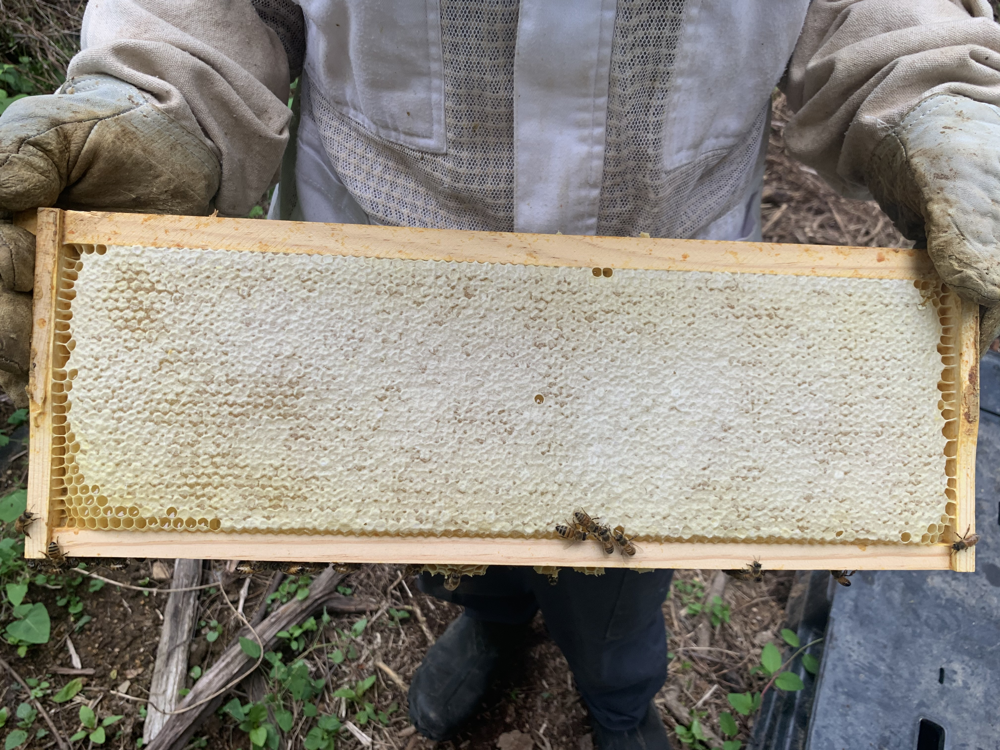

Raw local honey from Harrisburg, PA
The Alleman Apiary produces raw, unfiltered honey from our hives in Central Pennsylvania. Every jar is what comes out of the hive — unheated, unblended, no syrup added, no imports mixed in. We sell directly from our honey stand at 3502 High St., Harrisburg, PA 17109 on the honor system, and through partner locations across Central PA.
What "raw local honey" actually means
Most "honey" sold in U.S. supermarkets isn't real honey the way our great-grandparents knew it. It's heat-processed, ultra-filtered (which removes the pollen that proves where it came from), often blended with imports from China and Argentina, and sometimes adulterated with corn or rice syrup to stretch the volume.
Our honey is different. It's raw — never heated above hive temperature. It's unfiltered — natural pollen, propolis traces, and beneficial enzymes are still in there. It's local — our bees forage within a few miles of where you're buying the jar, so the honey reflects whatever's blooming in Central PA that season. And it's traceable — we can tell you which apiary site each jar came from.
If you've only had supermarket honey, real raw local honey is a different food entirely.

Honey varieties
Spring Wildflower Honey
Light amber, mild, and floral. Spring honey in Central PA reflects early-season nectar — black locust, tulip poplar, autumn olive, dandelion, and a mix of wildflowers in bloom from late April through early June. Spring honey often crystallizes faster than summer or fall because of its sugar profile (which is normal).
Summer Honey
Medium amber, fuller flavor. Summer honey comes from clover, wild basswood (linden), sumac, and other midsummer blooms. Often the most "balanced" tasting honey of the year — sweet but not flat, with real floral character.
Fall Honey
Dark amber to dark, robust and complex. Fall honey in PA includes goldenrod, aster, knotweed, and late wildflowers. This is the strongest-flavored honey we produce — more like molasses or buckwheat in character. People who like rich flavors love it; people who want mild prefer spring or summer.
Cut Comb Honey
Honey still in its original wax comb, cut directly from the hive frame and packaged in a clear container. Eat it as is (the wax is edible), spread it on toast comb-and-all, or let the honey drain for a slow release of pure honey over several days. Limited availability based on which hives produced surplus comb honey.
Chunk Honey
A piece of cut comb dropped into a jar of liquid honey. Best of both — eat the comb, pour the liquid. A favorite for people who want comb but also want it to last.
Creamed Honey
Smooth, spreadable honey produced through controlled crystallization. Same raw honey, different texture — like soft butter rather than syrup. Doesn't drip off bread. Available periodically based on production.
Beeswax, pollen, propolis & handcrafted goods
Beeswax
Pure beeswax from our hives — clean, naturally golden. Available as raw blocks for crafters, candle makers, woodworkers, and DIY skincare. Bulk quantities available — call to check supply.
Bee Pollen
Locally collected bee pollen, available seasonally based on harvest. Raw, unprocessed, refrigerated for freshness. Some people use it as a food supplement; others use it for local pollen exposure during allergy season. We don't make medical claims — we just sell good pollen.
Propolis
Raw propolis from our hives, available occasionally. Natural antimicrobial resin that bees use to seal their hive — used by some for tinctures, throat sprays, and traditional remedies. Quantities are always limited.
Small-batch beeswax & propolis products
Lip balms, candles, salves, beeswax wraps, and propolis-based items. Inventory rotates throughout the year and changes based on what we have time to make. When something sells out, it's gone until the next batch is ready. Stop by the stand or call 717-379-3248 if you're looking for something specific.
Honey stand & pickup
3502 High St., Harrisburg, PA 17109
Self-serve honey stand. Stop by anytime to browse what's available. Cash, CashApp, and Venmo accepted on the honor system. Larger orders, custom requests, or scheduled pickups for specialty items — call or text 717-379-3248 to arrange.
Wholesale & local partner locations
We supply small batches of our honey to local farm stands, markets, and specialty stores throughout Central PA. If you run a local market, restaurant, or shop and you'd like to carry The Alleman Apiary honey, call or text 717-379-3248 to discuss wholesale pricing and seasonal availability.

Honey FAQ
Why is your honey different colors at different times of year?
Because we don't blend. Each harvest reflects whatever the bees were foraging on — spring blooms, summer clover, fall goldenrod. The color, flavor, and even crystallization speed change with the season. Commercial honey is blended to be uniform year-round. Real local honey isn't supposed to be.
My honey crystallized. Is it still good?
Yes — crystallization is a sign of real honey, not a defect. Pure raw honey crystallizes naturally over time, especially in cooler weather. To re-liquefy, set the jar in warm (not hot) water for 15–30 minutes. Don't microwave — high heat damages the enzymes that make raw honey valuable in the first place. If you like the spreadable texture, just eat it crystallized. (See our article on why raw honey crystallizes.)
Does local honey help with allergies?
This is the most common question we get and the honest answer is: maybe, for some people. The theory is that small amounts of local pollen in raw honey may help your immune system recognize local plant allergens. Some customers swear it works. There's limited rigorous research either way. We don't make medical claims — we make honey. If you want to try it, start a few months before your allergy season and see what happens.
Why is your honey more expensive than supermarket honey?
Because it's a different product. Supermarket honey is often blended with imports, ultra-filtered, sometimes adulterated, and produced at industrial scale to hit the lowest possible price. Our honey comes from our own hives, harvested in small batches, never heated, never blended, sold raw. The pricing reflects what it actually costs to produce real honey responsibly.
Do you ship honey?
We don't currently ship — pickup at our honey stand only. Shipping honey is regulated, expensive, and risk of breakage means we'd rather you taste the real thing in person at our stand. If you're outside Central PA and looking for Pennsylvania raw honey, we can sometimes refer you to a beekeeper in your area.
Is your honey organic?
The honest answer: nobody producing honey in the eastern U.S. can legitimately claim "organic" the way the term is used for produce. Honey bees forage up to 3 miles from the hive, which means they're potentially visiting plants in any field, lawn, or roadside in that range. We can control how WE manage our hives (and we do — minimal intervention, treatment-aware, sustainable practices). We can't control where 50,000 bees decide to fly. Be skeptical of anyone in PA selling "organic honey."
Stop by the honey stand
3502 High St., Harrisburg, PA 17109. Self-serve. Honor system. Cash or Venmo. Stop by anytime — and if we're around, knock on the door and we'll show you the apiary too.
Call or Text 717-379-3248